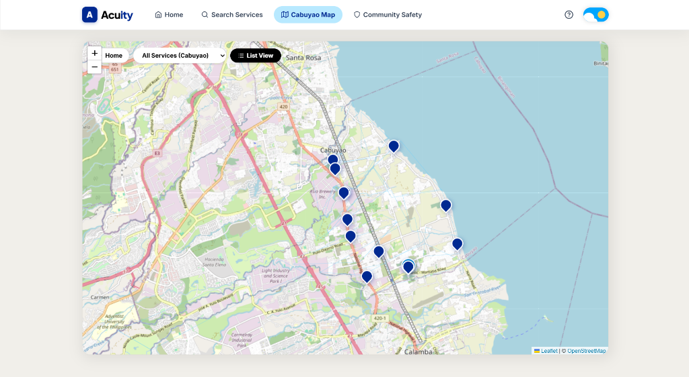
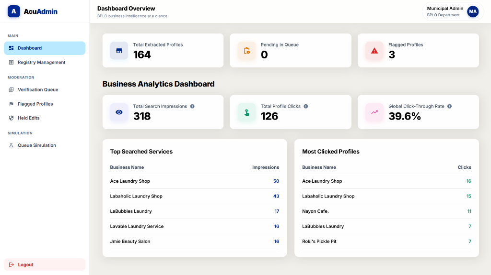

ACUITY Web Platform & Verification Engine
Undergraduate Thesis, 2026
Stack: Flask, React, Vite, SQLAlchemy, Leaflet, JWT, REST APIs, Python, sklearn-crfsuite, pytest


ACUITY is a municipal business discovery platform that helps local micro-enterprises in Cabuyao get discovered while matching their records against the municipal Business Permit and Licensing Office (BPLO) registry.
What I built
I built a discovery prototype that manages 164 business profiles extracted from community social media posts, integrated with interactive Leaflet map search. To connect community entries with municipal records, I wrote reconciliation algorithms matching entries against official business permits using fuzzy matching. For security and data integrity, I added hashed-PIN edit protection so owners can safely update their listings, alongside snapshot rollbacks so administrators can recover previous data states.
I also built and published the companion acuity-framework library on PyPI, using a CRF model that extracts business names, categories, and locations from Taglish social posts with a 0.796 token-level micro-F1 (0.865 precision, 0.737 recall).
How I tested and documented it
I wrote functional test suites covering core user paths: map search, hashed-PIN merchant claiming, fuzzy-match reconciliation workflows, and snapshot rollback operations. I conducted a usability study with 34 survey participants, achieving a 3.62 / 4.00 evaluation score. I also wrote automated pytest checks for boundary values and entity classification failures, drafted architecture and data flow diagrams, and produced an administrator user manual explaining verification and rollback procedures.